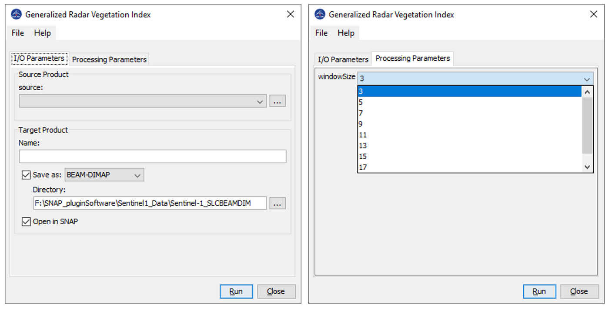

| Generalized Radar Vegetation Index Generation | |

Microwave Remote Sensing Lab (MRSLab)
Indian Institute of Technology Bombay, India
Contributors: Dr. Dipankar Mandal et al.
Tel: +91-22-2576-7677
Date: 25 Nov 2020
E-mail: mrscsre@gmail.com; dipankar.agrilengg@gmail.com
URL: http://www.mrslab.in
The Generalized Radar Vegetation Index (GRVI) is calculated from quad-pol 3x3 covariance matrix C3 or coherency matrix T3.
The GRVI uses the concept of a geodesic distance (GD) between two Kennaugh matrices projected on unit sphere [1]. The Generalized Volume SCattering Model (GVSM) is used as a volume model. So, it computes a similarity measure fv between the observed Kennaugh matrix and a Kennaugh matrix corresponding to the GVSM.
The parameter beta is introduced, which is the ratio of minimum to maximum geodesic distances between K and elementary targets: trihedral (Kt), cylinder (Kc), dihedral (Kd), and narrow dihedral (Knd). The final formulation of GRVI [2] is as follows:

A schematic workflow for the Generalized volume scattering model based Radar Vegetation Index (GRVI) formulation is shown below:

Ref: [1] D. Mandal, V. Kumar, D. Ratha, J. M. Lopez-Sanchez, A. Bhattacharya, H. McNairn, Y. S. Rao, and K. V. Ramana, “Assessment of rice growth conditions in a semi-arid region of India using the Generalized Radar Vegetation Index derived from RADARSAT-2 polarimetric SAR data,” Remote Sensing of Environment, 237: 111561, 2020. [2] D. Ratha, D. Mandal, V. Kumar, H. McNairn, A. Bhattacharya, and A. C. Frery, “A Generalized Volume Scattering Model-Based Vegetation Index From Polarimetric SAR Data,” IEEE Geoscience and Remote Sensing Letters, 16 (11), pp. 1791-1795, 2019. doi:10.1109/LGRS.2019.2907703.
Inputs to GRVI operator: C3 or T3 matrix generated from quad-pol data. Processing window size--> data type int
Output of GRVI operator: grvi image-->data type: float32
